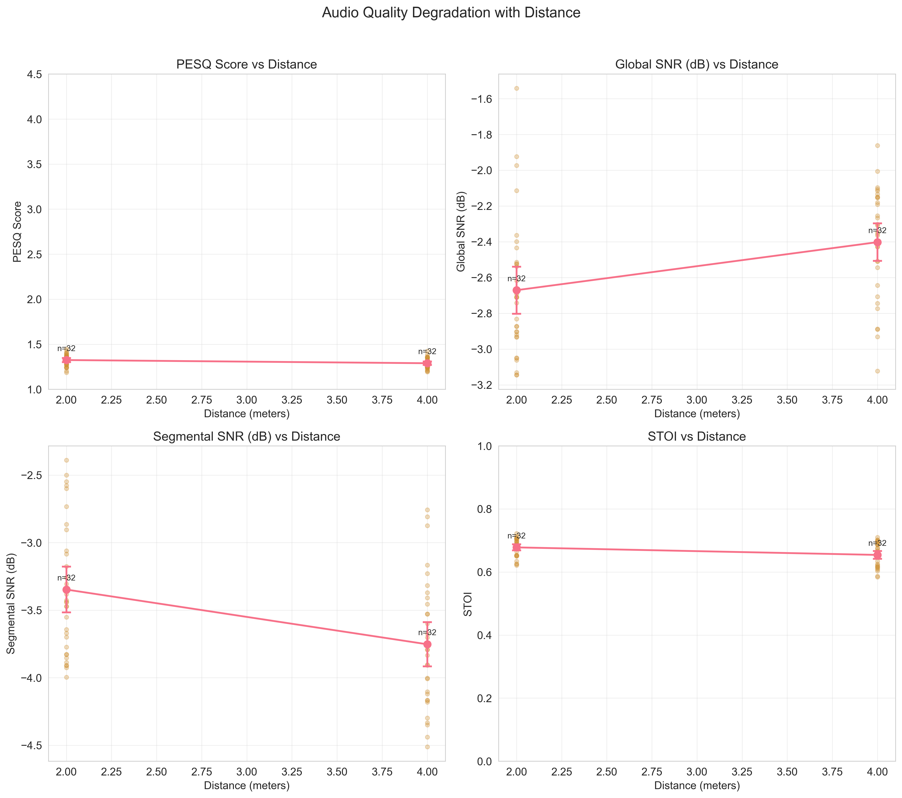
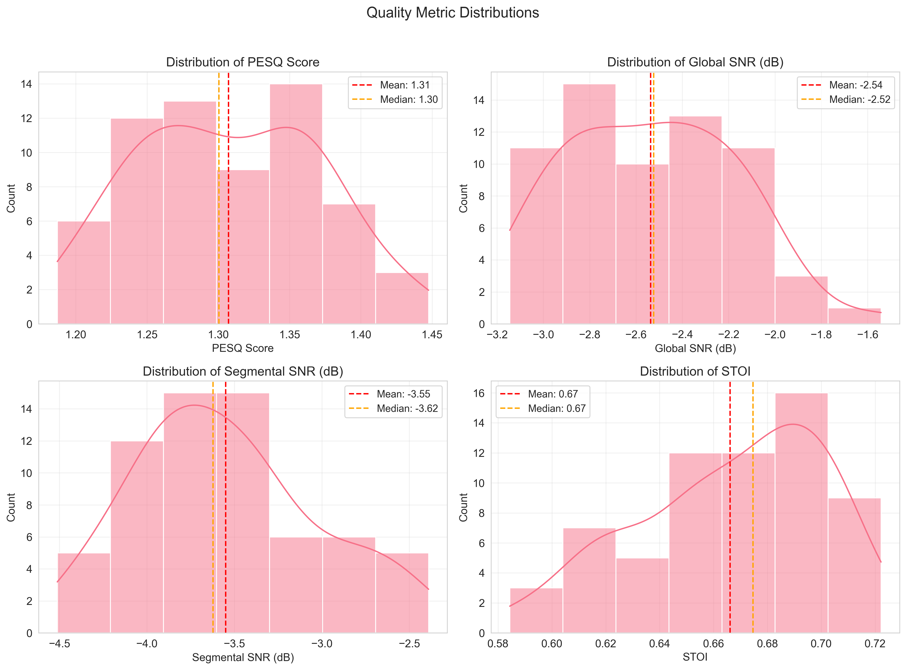
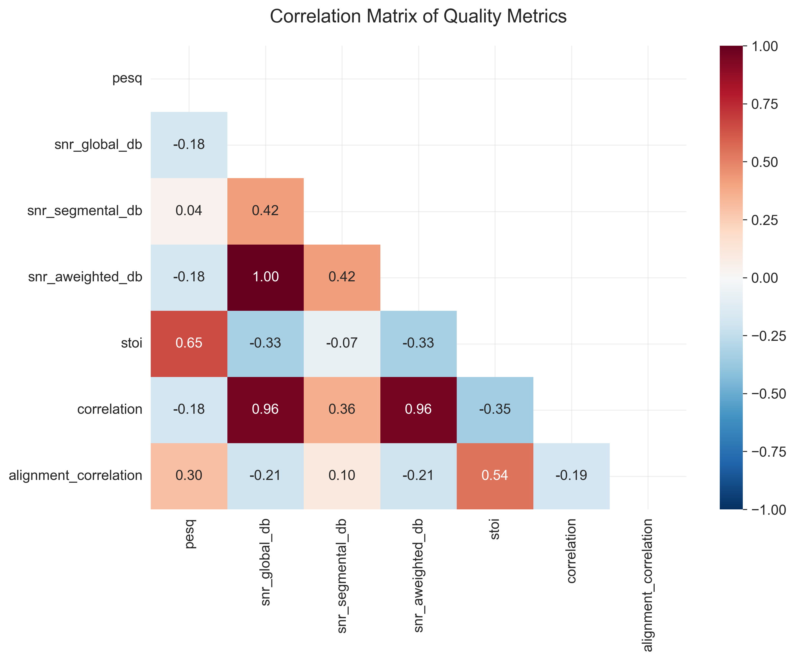
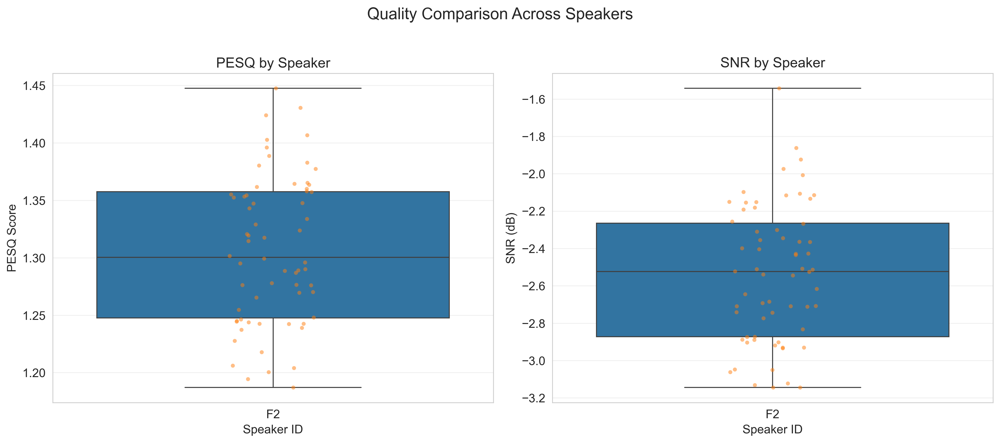

🎵 Audio Quality Dashboard
Samsung Prism - Punjabi Speech Quality Assessment
Generated: 2025-12-03 10:50:37
64
Total Files
1.307
Mean PESQ
-2.5 dB
Mean SNR
100.0%
Success Rate
Quality Analysis
PESQ by Distance & Speaker
Quality Degradation with Distance

Metric Distributions

Correlation Matrix

Speaker Analysis
